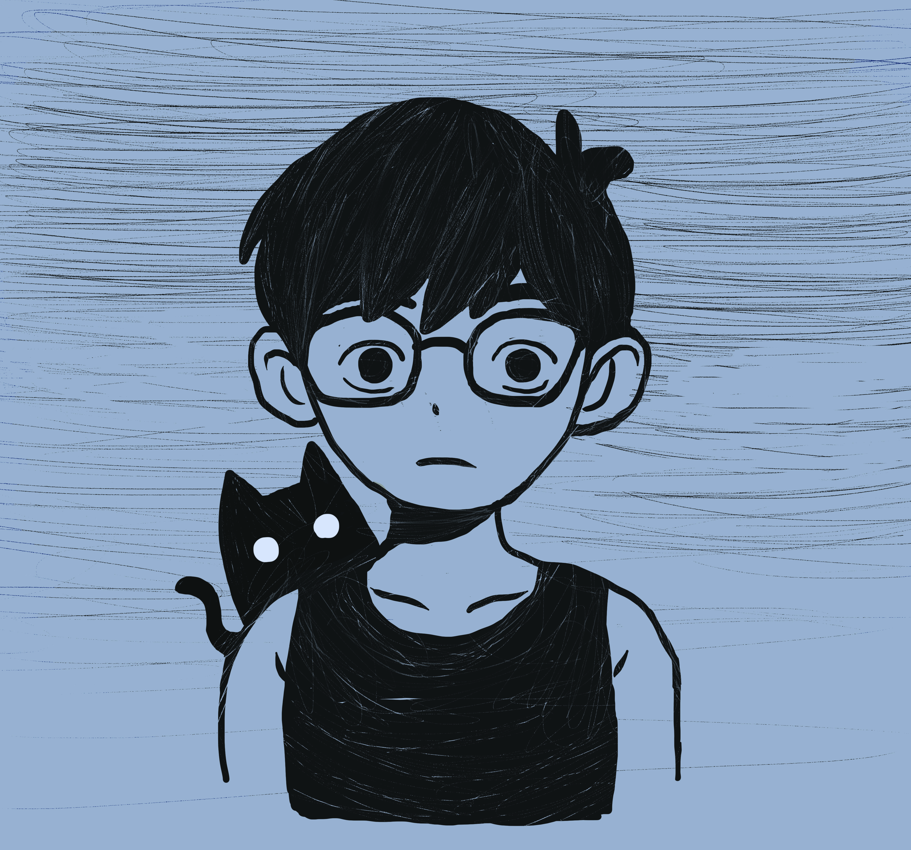
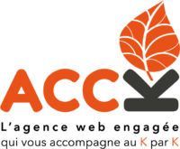
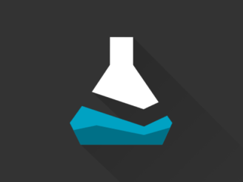
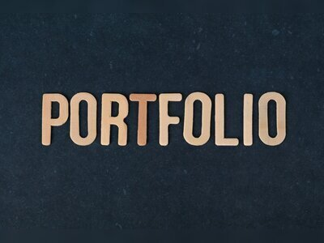
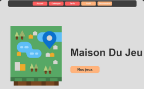
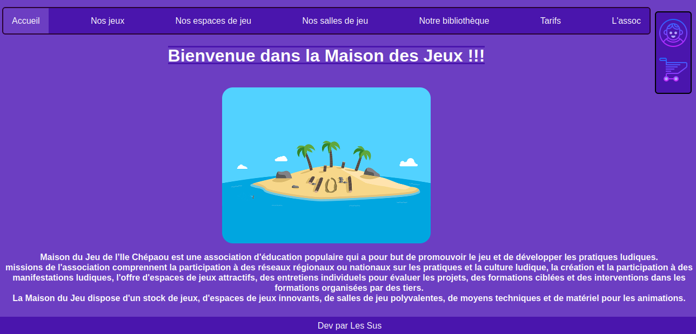
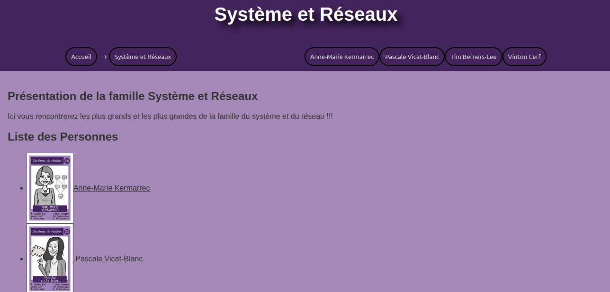

Maxime Constant
Je m'appelle Maxime Constant. Je suis un étudiant en informatique de 24 ans. Je suis passionné par l'informatique et les jeux vidéos. Cette passion m'a naturellement conduit à poursuivre une carrière dans ce domaine.
Je trouve une véritable satisfaction dans la résolution de problèmes techniques et la création de solutions innovantes. Mon objectif est de contribuer activement au développement de projets technologiques.

Je suis diplômé d’un BTS Services Informatiques aux Organisations (SIO), option Solutions Logicielles et Applications Métiers (SLAM) au lycée La Colinière à Nantes.
Mon parcours académique a débuté au lycée Livet, où j’ai obtenu mon baccalauréat STI2D (Sciences et Technologies de l’Industrie et du Développement Durable) avec l’option Systèmes d’Information et Numérique (SIN). Cette expérience a jeté les bases de ma passion pour l’informatique et la technologie.
Actuellement, je poursuis mes études en Bachelor 3 Développement Web à l’école .decode.
Mes compétences incluent le développement logiciel, la gestion de bases de données et la conception d’interfaces utilisateur. Je suis particulièrement intéressé par les technologies comme Python, PHP et les frameworks web tels que Django et Symfony.
Un système de gestion de la charge de travail basé sur Django, conçu pour aider à suivre et à gérer efficacement les tâches et les ressources d'un projet.

Regroupement des projets pendant le stage de 2 éme année de bts

Ce bot Discord surveille les offres de Dealabs et les partage automatiquement sur votre serveur Discord.

Portfolio HTML/CSS

Amélioration d'un site web existant avec des fonctionnalités supplémentaires

Projet test identique à la maison du jeu incomplet

Dans le cadre de notre première expérience de travail en groupe, nous avons réalisé un site web statique basé sur le concept ..